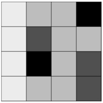
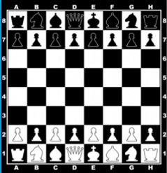
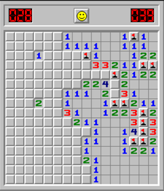

Python Cursus - Geneste Lijsten
Meteen naar de Afsluitende Opgaven over Geneste LijstenTerug naar de cursus pagina
Hoofdstuk 12c - Geneste lijsten
Geneste loops - alle combinaties
Je kunt een loop in een andere loop stoppen. Dit gebruik je om bijvoorbeeld alle combinaties van twee dingen af te drukken, coördinaten bijvoorbeeld.
Wat gebeurt hier?- Voor elke waarde van
x, worden alle waarden vanyafgedrukt. - In de "buitenste loop" veranderd
xsteeds - In de "binnenste loop" veranderd
ysteeds
x blijft eerst een poosje op 0 blijft staan, terwijl y steeds veranderd. Als y zijn maximale waarde heeft bereikt (hier 3), dan gaat x pas omhoog.
Bekijk eventueel het volgende filmpje voor extra uitleg over geneste lijsten:Opgave 12c.1 Stok kaarten afdrukken
Deze opgave wordt niet automatisch gecontroleerd. Klik hier voor de uitwerking.Opgave 12c.2 Alle tafels van vermenigvuldiging (met een for)
Deze opdracht wordt nog niet automatisch gecontroleerd. Klik hier om je eigen oplossing te vergelijken met een model oplossing.
Geneste loops - uitgebreidere voorwaarden
Je kunt ook geneste loops combineren met het stellen van voorwaarden. Bijvoorbeeld, dat alleen dubbele waarden worden afgedrukt.Je kunt natuurlijk ook while loops nesten, of for loops en while loops door elkaar heen gebruiken.
Opgave 12c.3 Cadeaus uitdelen
Deze opdracht wordt nog niet automatisch gecontroleerd. Klik hier om je eigen oplossing te vergelijken met een model oplossing.Opgave 12c.4 Maanden met een rrrrr (met een for)
Deze opdracht wordt nog niet automatisch gecontroleerd. Klik hier om je eigen oplossing te vergelijken met een model oplossing.
Geneste lijsten
Je kunt ook lijsten van lijsten maken. Eigenlijk is dit een tabel (of matrix). Tabellen kom je natuurlijk overal tegen, je resultaten van een natuurkunde experiment, of om bij te houden welke stoelen in een bioscoop zijn gereserveerd. Daarnaast worden deze twee-dimensionale lijsten ook gebruikt om plaatjes in de computer te representeren (weet je nog, bitmap?) of spellen:



Zo kun je bijvoorbeeld een boter-kaas-eieren bord bouwen (een liggend streepje is een lege cel).
"X" is aan zet. Kun je op de juiste plek de "-" veranderen in een "X" zodat je wint?
Als je naar de code kijkt zie je vast dat dit beter kan. Als ik namelijk een spel wil maken met veel meer rijen en kolommen, dan moet ik heel veel typen. Beter is om loops te gebruiken, zoals je net geleerd hebt.
Opgave 12c.4.2 Smiley
Klik hier om je eigen oplossing te vergelijken met een model oplossing.Opgave 12c.4.1 Bordopbouw: Boter-Kaas-Eieren
Klik hier om je eigen oplossing te vergelijken met een model oplossing.Opgave 12c.5 Mijnenveger
Deze opdracht wordt nog niet automatisch gecontroleerd. Klik hier om je eigen oplossing te vergelijken met een model oplossing.Wat je geleerd hebt over Geneste Lijsten
- Nesten van for-loops
- Nesten van lijsten
- Combineren van nesten met voorwaarden
Meteen naar de Afsluitende Opgaven over Geneste Lijsten
Terug naar de cursus pagina